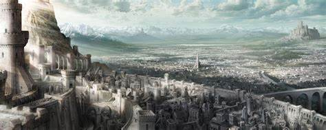
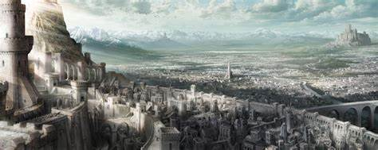

.jpg "Old King Allant")
The player character is granted a starting character class, which further influences their stats, though they can be altered later in the game and effectively change a player's class combined with a different weapon choice.The world is divided into six areas; the Nexus hub world and five additional worlds subdivided into four areas which each end in a boss encounter.Most actions drain a stamina meter, with its management forming a core part of combat.By defeating an enemy, the player acquires Souls, which act as both experience points to raise various statistics; and the game's currency for purchasing new weapons, armor and items.When a player is killed,the player returns in soul form with lower maximum health and the loss of all unused souls.If the player manages to reach their bloodstain at the point where they were last killed, they regain their lost souls. However, if they are killed before then, the souls are lost permanently.
Demon's Souls takes place in the kingdom of Boletaria. In ancient times, due to the misuse of magic known as the Soul Arts, Boletaria was attacked by a being called the Old One. The world was nearly consumed by the magical "Deep Fog" and the soul-eating demons it created. The Old One was eventually lulled to slumber, saving what remained of Boletaria, while some survivors became long-lived Monumentals to warn future generations. In the game's present, Boletaria's ruler King Allant restored the Soul Arts, awakening the Old One and its demon army. Boletaria is now being consumed by demons, with those humans without souls turning into insane monsters. Players take the role of an adventurer entering the fog engulfing Boletaria.

A remake by Bluepoint Games for the PlayStation 5 was announced at the console's reveal event in June 2020.Production on the remake began following completion of the studio's 2018 remake of Shadow of the Colossus. Demon's Souls released as a launch title for the console on November 12, 2020.